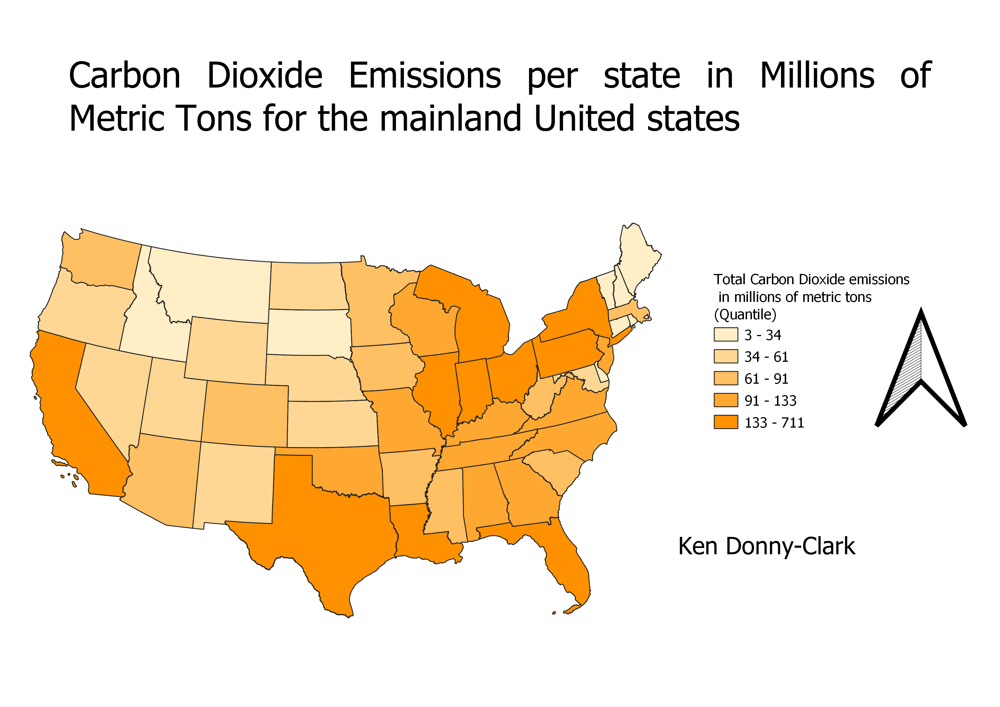

Homework 9: Make a choropleth or proportional symbol map
Ken Donny-Clark
This chloropleth shows the Carbon Dioxide emissions per state in millions of metric tons. I think this is an important value because it illustrates where states that consume a large amount of carbon emission producing energy consumption is located. These states could perhaps adobt a more environmentally friendly energy production program to emit less CO2.

Data used for this project
CSV data for carbon emissions per state
Link to the vector file
Source for CSV Data: https://www.eia.gov/environment/emissions/state/